Track & Play – User Manual
This manual explains how to use Track & Play (TAP), the app for tracking and analyzing your own Magic: The Gathering games. It is aimed at newcomers as well as at people who already use the app, since it also introduces new features.
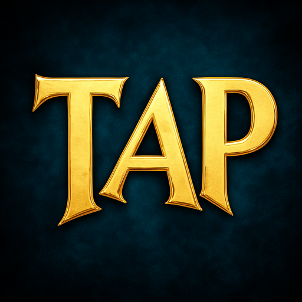
1. Getting Started
The very first time you launch Track & Play, a short setup dialog appears:
- Choose the scope: “Just me” (the simplest option – only your own games are tracked) or “Players / groups too” (you can additionally create and follow other players and playgroups). You can change this setting at any time later with the “Track players” switch on the Home tab.
- Enter your name: Under “What should we call you?” you set your own player name. From then on, this player is the “me player” that all statistics refer to.
- Optionally create a first playgroup, if you chose “Players / groups too” in the first step.
- Finish with “Done” – the main view opens afterwards.
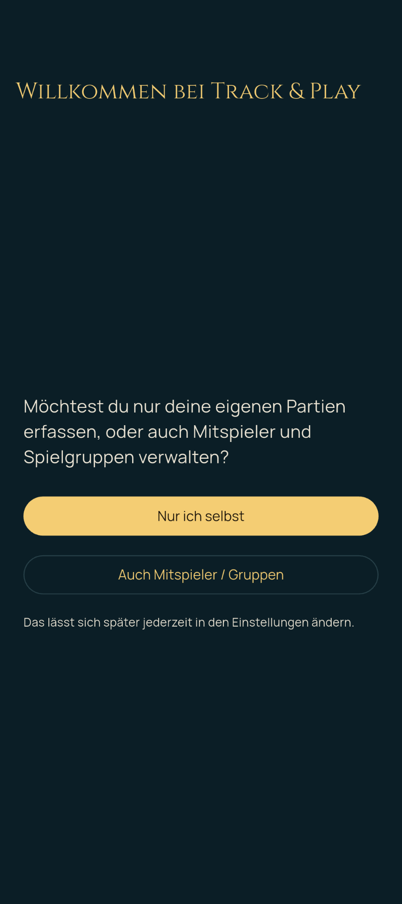
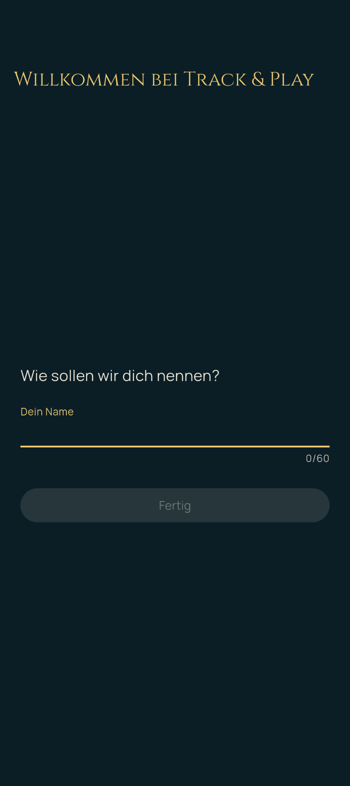
2. Navigation – the four main sections
After setup, the main view opens with a navigation bar at the bottom of the screen containing four sections (tabs):
- Home – greeting, Elo score, reminders and shortcuts
- Decks – your own deck collection
- Statistics – all analyses of your games
- Games – the game history and the starting point for new games
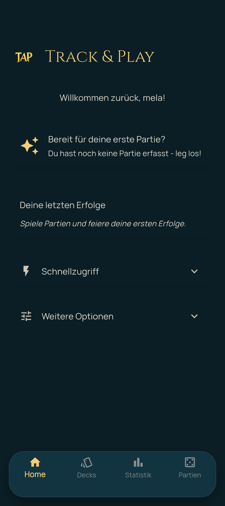
3. The Home Tab
The Home tab is the central starting point and shows at a glance:
- A greeting with your player name.
- Elo score card: a value between 0 and 100 that gives a rough estimate of your own “playing strength” relative to an average opponent and is updated with every completed game. On the Home tab, all games are always included – across all groups, game modes and the entire time span (how the value is calculated is explained in chapter 9).
- Last game reminder: shows how long ago your last recorded game was.
- Random deck card: randomly suggests one of your own decks – handy for deciding “What do I play today?” (see details below).
- Recent achievements: the most recently unlocked achievement badges, with a link to the full achievements overview (see chapter 10).
Random deck – “Which deck do I play today?”
The “Which deck do I play today?” card takes the decision of which deck hits the table today off your hands. Tapping “Random deck” picks one of your own decks. This works in two steps:
- Filter: Only your own, non-archived decks are considered –
decks belonging to other players and archived decks are never picked. The card’s
filters let you narrow this selection down further:
- Bracket (the deck’s power bracket),
- Deck type: Precon, Upgraded (an upgraded precon) or Homebrew,
- Proxy status: original decks only or decks with proxy cards.
- Roll: One of the remaining decks is drawn purely at random. Every deck has exactly the same chance – there is no weighting, for example by when a deck was last played, how high its win rate is or how it was rated. With five matching decks, each one therefore has a chance of exactly 20 %.
The drawn deck is shown by name below the button and stays there until you roll again. Important: changing the filters does not automatically re-roll. The filter only determines which decks the next tap on “Random deck” draws from – the previously drawn deck stays visible until then, even if it no longer matches the new filter.
Since every tap draws independently, the same deck can come up several times in a row. If you want a different deck, simply roll again.
Below that are two collapsible cards:
- Shortcuts: quick links to features without their own tab – group management, setting up Wheel of Chaos, Archenemy schemes and Planechase (each only visible when the corresponding module is enabled, see chapter 12), as well as data export/import (see chapter 13).
- More options: global switches for
- Track players (see chapter 11),
- Wheel of Chaos, Archenemy schemes and Planechase (see chapter 12),
- Automatic backup (writes a backup file to an app-specific folder on the device when the app is closed – no cloud, no account, see chapter 13),
- and the “Back up now” button for an immediate, additional backup independent of the automatic one.
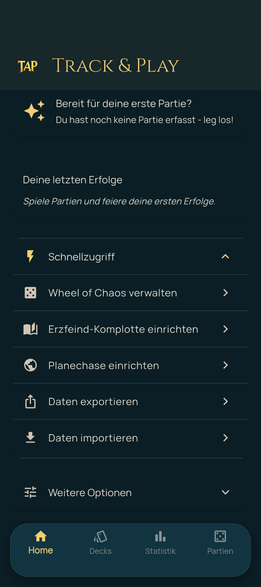
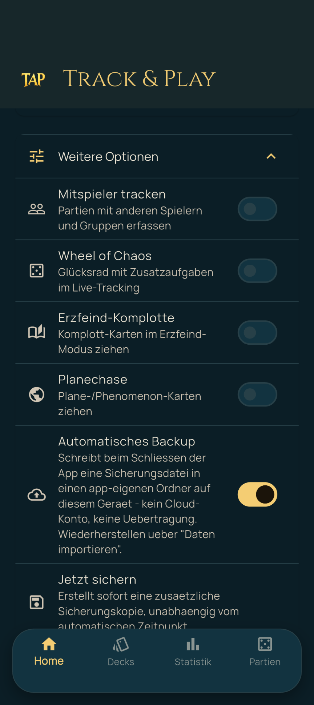
4. Managing Decks
The Decks tab is where you manage your own decks:
- The “+” icon at the bottom right creates a new deck.
- The deck form records: deck name, commander (optional) and partner commander (optional), color identity, build type, up to three archetypes, a power bracket, whether the deck contains proxy cards, whether it is tournament legal, an optional online link to the deck (e.g. Moxfield/ Archidekt) and free-form subthemes (e.g. “Ninjutsu, Clones”).
- The magnifying glass icon lets you search the deck list by deck name or commander, the sort icon orders it by name or performance metrics.
- Decks can be archived instead of deleted (e.g. when a deck is no longer played) – archived decks can optionally be shown again via the archive icon.
- The QR icon on a deck lets you share that single deck with another person via QR code (e.g. so someone can import the deck into their own Track & Play installation), independently of the more comprehensive export wizard described in chapter 13.
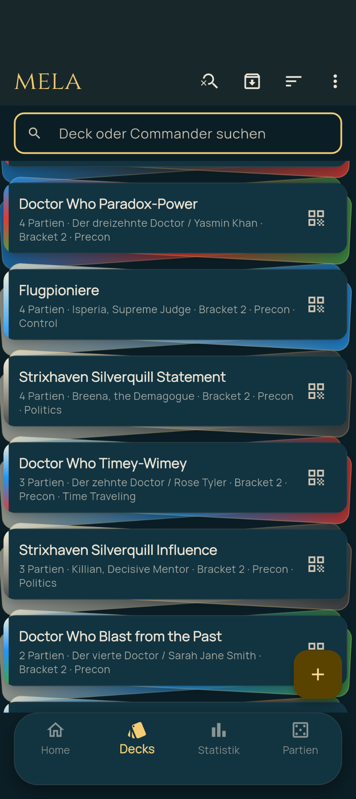
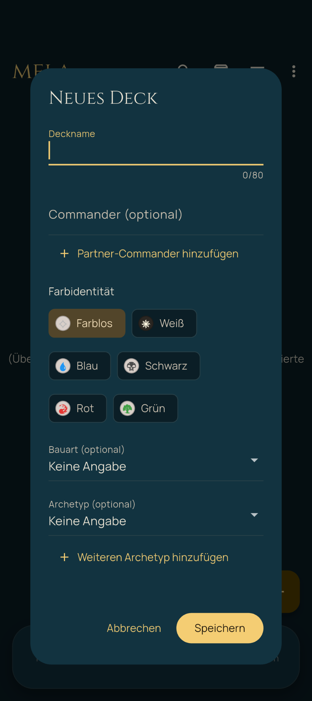
5. Recording a New Game
A new game is started with the “+” icon on the Games tab.
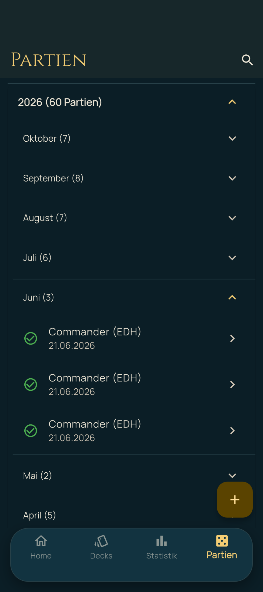
There are two fundamentally different ways to do this, which you can switch between at the top of the screen:
- Track live: The game is tracked live in the app while you play (life totals, commander damage, etc. – see chapter 6). Recommended when the device is within reach on the table during the game.
- Add manually: A game that has already been played is recorded afterwards, including result, placements and mulligans – without live tracking of life totals. Handy if you only pick up the app after the game.
Regardless of the mode, you first set:
- the game mode (e.g. Commander, cEDH, Two-Headed Giant, Archenemy),
- optionally a playgroup (only visible when “Track players” is enabled),
- the participants – via “Add known player” (only with player tracking enabled) or “Add unknown player” for guests/opponents without their own profile; each known participant can additionally be assigned the deck they played.
You are always included: In every new game, your own player (the “me player” from setup) is already entered as a participant – but without a deck yet, which the hint “No deck selected yet” points out. You pick the deck you played via the deck icon in your row. If you don’t want to record a specific deck, you can also choose “Don’t specify a deck” there.
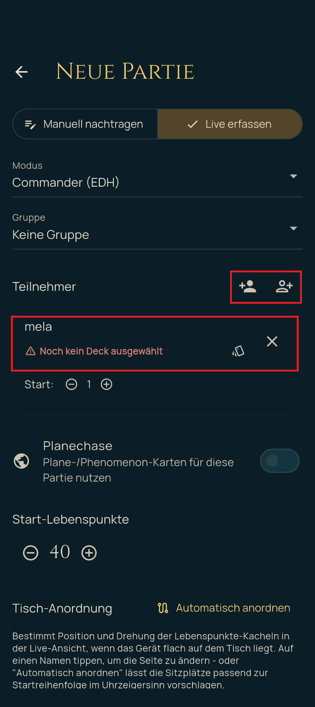
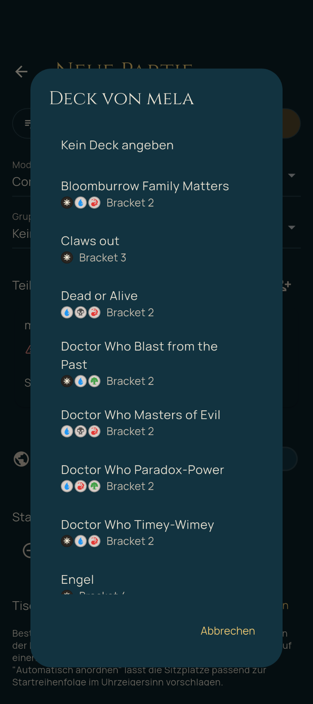
Known and unknown players:
- Known players are players who have their own profile in the app (see chapter 11). They can be assigned the deck they played, can belong to playgroups and have their own player detail view with their decks. This option is only available when “Track players” is enabled.
- Unknown players are guests or opponents for whom you don’t want to create a profile – for example in a one-off game at your local game store. They take part in the game as normal (e.g. with their own life tile and placement), but are not saved as a person and not followed across multiple games. When adding them, you can enter a name (optional) and the color identity of their deck.
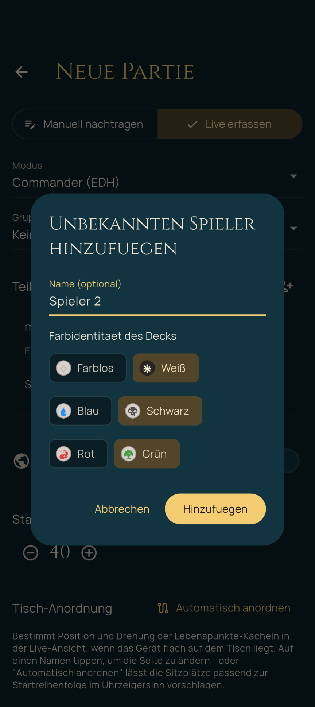
If “Track players” is disabled, opponents are therefore always added as unknown players.
Turn order: Using the “Start” field with “−” and “+”, you set for each participant at which position in the turn order they start. The starting position is used in the statistics (comparison by turn order, see chapter 9) and, when tracking live, by “Arrange automatically” for the seating layout.
When adding a game manually, the following are added: the date of the game, optional notes, a rating of your own deck’s performance (1–5 stars), each participant’s placement and number of mulligans, as well as marking a draw or the winning team (in Two-Headed Giant) or the winner (in Archenemy: the archenemy or the team).
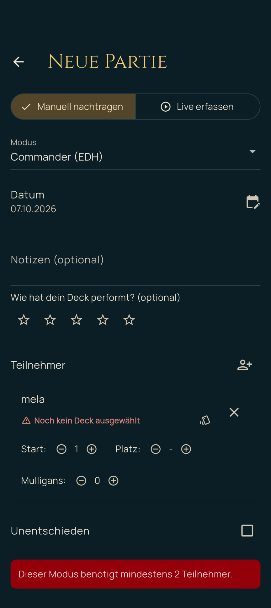
When tracking live, you set instead: the starting life totals (in Archenemy separately for the archenemy and the team), optionally the Planechase add-on module for this one game, and the table layout – it determines on which side of the table and in which orientation each participant’s life tile is shown later when the device lies flat on the table. Tapping a name changes the assigned side; the “Arrange automatically” button distributes the seats clockwise according to the turn order.
Finish with “Save manually” or “Start live tracking”.
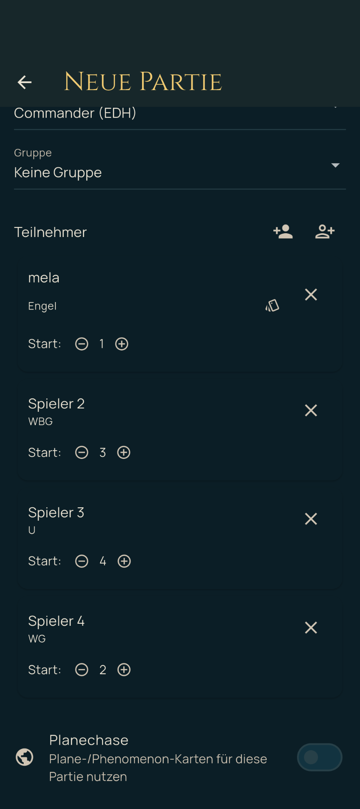
6. Live Tracking During the Game
The live view is designed for landscape use while the device lies flat on the table – each participant gets a tile facing their side of the table.
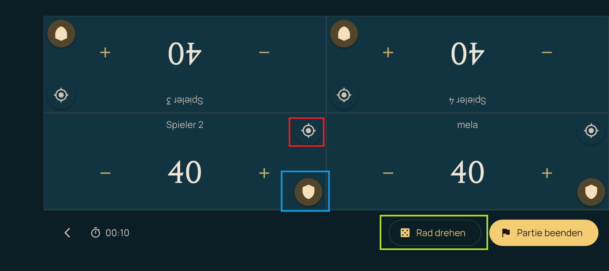
Changing life totals:
- A simple tap on “+” or “−” changes the life total by 1.
- A long press on “+” or “−” opens a dialog for larger changes with predefined quick values (1, 5, 10, 20) and a toggle between loss and gain.
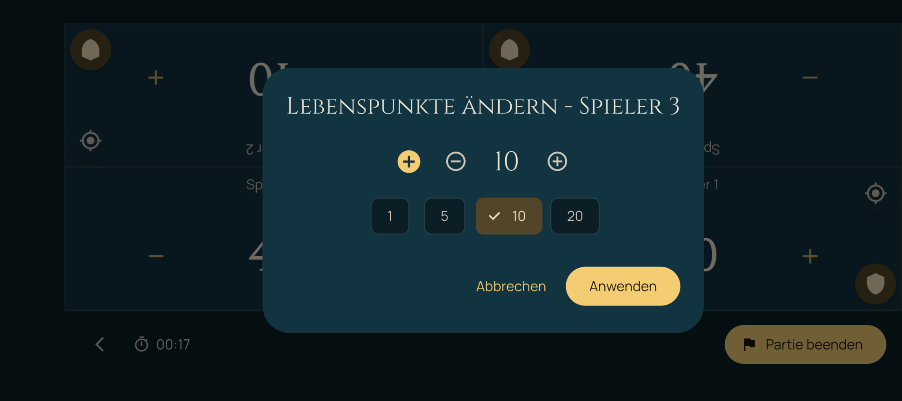
Other elements on each tile:
- Commander damage: opens a dialog in which the damage taken from each opposing commander can be recorded individually (relevant because 21 damage from a single commander eliminates a player). The running total is shown directly on the tile.
- Problem marker: an icon you can use to mark the participant currently perceived as “the problem at the table” (e.g. whoever has the most dominant board state right now). Only one person can be marked at a time; a new mark automatically replaces the previous one. If a marked participant is eliminated (life at 0 or less), this information is permanently kept for the statistics, even if the mark then moves on to another participant.
- Archenemy scheme / ongoing schemes: only visible in Archenemy mode with the add-on module enabled, see chapter 12.
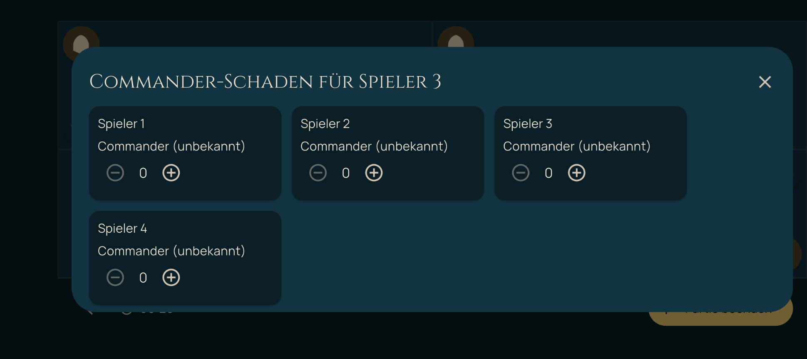
At the start of the game, a dialog asks for each participant’s number of mulligans.
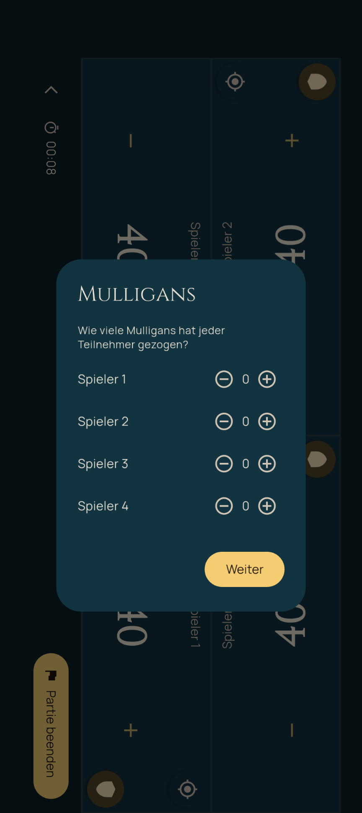
Further actions at the bottom of the live view: “Spin wheel” (Wheel of Chaos, only if enabled), “Change plane” (Planechase, only if enabled) and “End game”.
7. Ending and Scoring a Game
“End game” opens a dialog for recording the result:
- Draw as a checkbox,
- optionally a rating of your own deck performance (1–5 stars),
- otherwise, depending on the mode, the placement of each participant, or in Two-Headed Giant the winning team, in Archenemy the archenemy or the team as the winner.
Finish with “Confirm”. If placements are still missing, the dialog points this out (“Please assign a placement to every participant.”). Afterwards – if life total histories were recorded during the game – you are asked whether this history should be saved permanently (see the history chart in chapter 8).
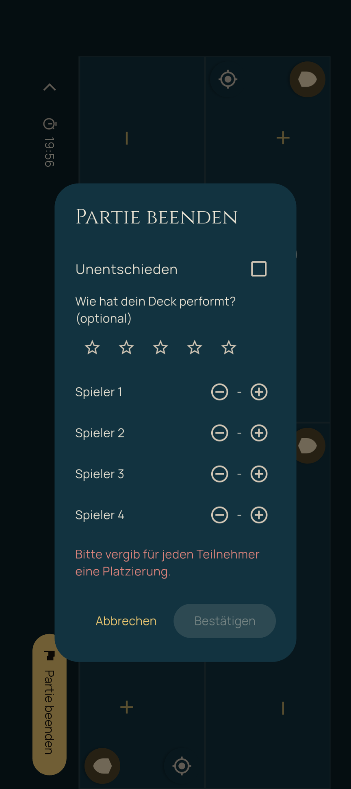
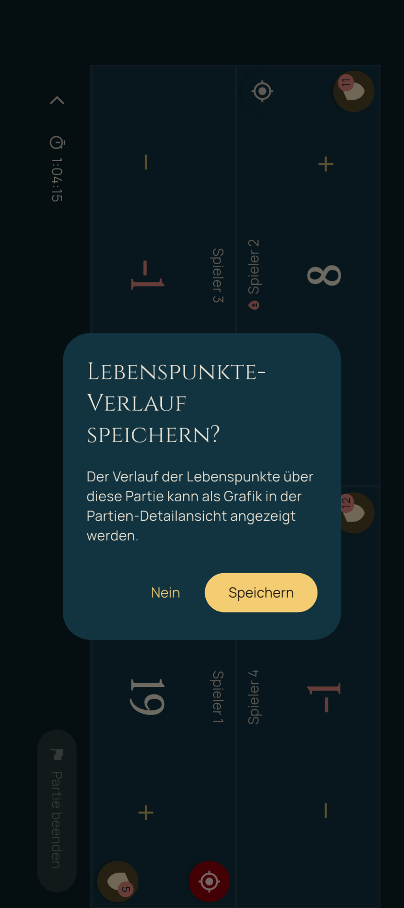
8. Game History and Detail View
The Games tab shows all recorded games in chronological order, grouped by year and month – each with the number of games and individually expandable and collapsible. At the top, a search field lets you search the games by player, commander or deck, and you can filter by game mode. Tapping a game opens the detail view with:
- the key data (date, mode, duration, group),
- all participants including color identity, turn order, placement/result and deck played; the winner is marked with a trophy, and whoever took the first damage with “First Blood”,
- in Commander games, the commander damage each participant received, broken down by commander,
- and, if recorded and saved in a live game, the life history chart at the end of the detail view – it shows the life totals of all participants over the course of the game as a line chart.
The pencil next to a participant lets you correct details afterwards, such as a misspelled name or a deck or color identity that was selected incorrectly at the start. The QR icon at the top right lets you share the game and its data with others.
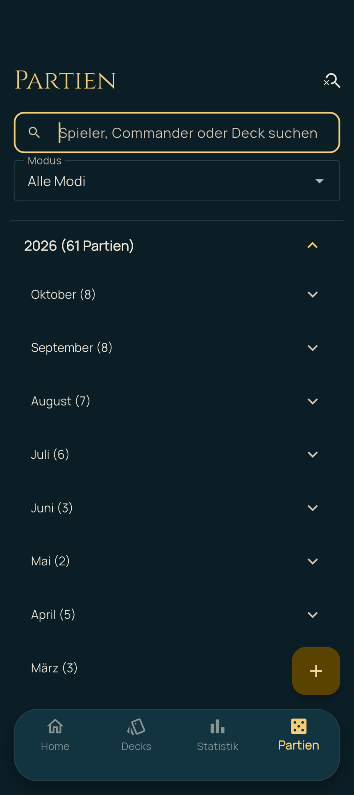
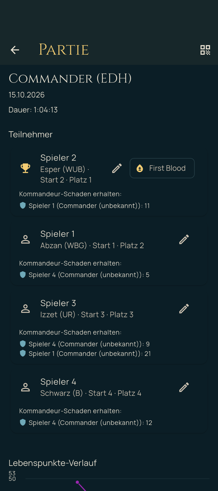
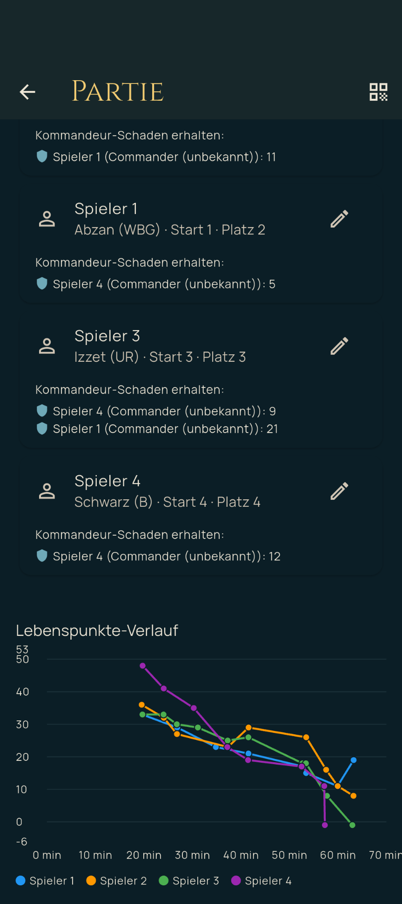
9. Statistics
The Statistics tab brings together all analyses of your games. At the top, you can narrow the selection by game mode, time span and (with player tracking enabled) group – all of the following values always refer only to the current selection.
Key figures row: win rate, number of games, longest win streak.
Results: a donut chart showing the split into wins, losses and draws, plus the draw rate below it as a separate figure (how often a game ends in a draw, independently of the general win rate, which counts a draw as a non-loss).
Score: the same personal value as on the Home tab (0–100, with a rating such as “Outstanding”), but calculated only from the games in the current selection. The calculation itself is identical; only the games included change (see “How the score is calculated” for details).
Activity by month: a line chart showing how many games were played in each month.
Further detailed figures (each only visible when there is data for it): average game duration, average placement, average number of mulligans including win rate with/without mulligan, average deck performance rating, commander kills dealt/taken, First Blood (how often you took the first damage dealt, including a win rate comparison), “The problem at the table” (how often you yourself were marked as such at the moment of elimination, including a win rate comparison) and the comeback rate (wins despite critically low life totals).
Comparison overviews by color identity, turn order, game duration, deck archetype, deck build type, bracket, commander partner and deck ownership (own vs. borrowed deck) each show the win rate for the respective group.
Lending analysis: a separate analysis of how the win rate turns out when other people borrow and play your decks.
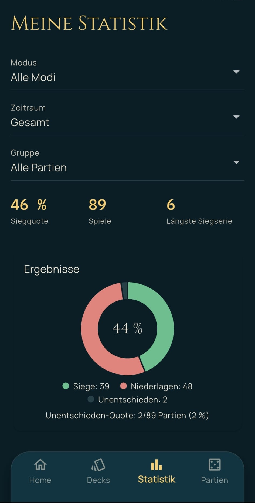
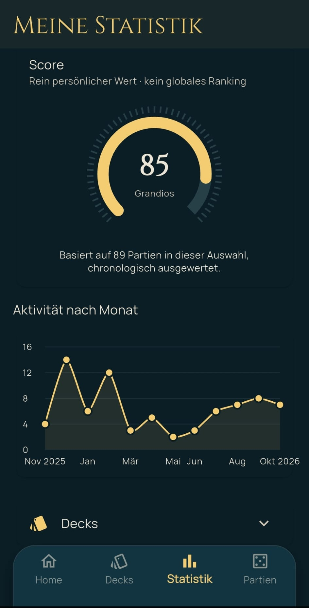
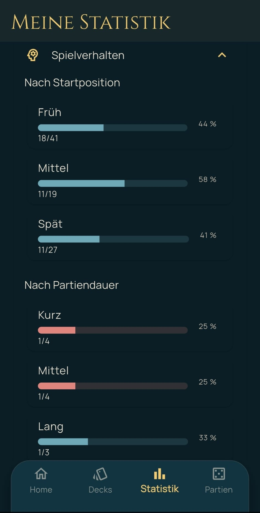
How the score is calculated
The score is based on the Elo system known from chess, but deliberately simplified: only you get a rating. Other players have no rating of their own – they only count indirectly through the number of participants in a game.
Which games count? Only completed games. Ongoing or unfinished live games are never included. On the Home tab, all completed games are taken into account; on the Statistics tab, only those that match the selected group, game mode and time span (All time, 1 year, 6 months, 30 days).
Step 1 – rate the result of each game. Each game gets a result value between 0 and 1:
- Draw: 0.5.
- With placement (typical for Commander and cEDH): the placement is scaled to the number of participants – 1st place gives 1.0, last place 0.0, and the places in between are evenly distributed ((number of participants − place) ÷ (number of participants − 1)). A 2nd place therefore counts more in a 6-player game (0.8) than in a 4-player game (0.67).
- Without individual placement (e.g. team modes such as Two-Headed Giant or Archenemy, or when no placement was recorded): simply win = 1.0, loss = 0.0.
Step 2 – adjust the rating. Everyone starts with the Elo starting rating of 1500. The games are processed in chronological order. Since the actual strength of the opponents is unknown, an average opponent is always assumed, against whom you would expect a result of 0.5. Per game, the rating then changes by 32 × (result − 0.5):
- Win or 1st place: +16
- Draw: ±0
- Loss or last place: −16
- 2nd place in a 4-player game: about +5, in a 6-player game: about +10
Every game counts equally, no matter how long ago it was played. If you want to see how things have been going recently, narrow the time span on the Statistics tab (e.g. to 30 days).
Step 3 – convert to 0 to 100. The rating is converted into a value from 0 to 100 using the standard Elo formula. It can be read as your estimated chance of winning in percent against an average opponent. The starting rating of 1500 gives exactly 50. Some examples:
| Rating | Score |
|---|---|
| 1300 | 24 |
| 1400 | 36 |
| 1500 | 50 |
| 1600 | 64 |
| 1700 | 76 |
| 1800 | 85 |
After a single win, the score is therefore 52 (rating 1516). The more games you have played, the further it can move away from 50.
Rating label: In addition to the number, a rating label is shown:
| Score | Rating label |
|---|---|
| 85 – 100 | Outstanding |
| 70 – 84 | Very strong |
| 55 – 69 | Strong |
| 40 – 54 | Average |
| 0 – 39 | Room for improvement |
What is not included: deck strength and bracket, who exactly was at the table, mulligans, life history, commander kills and achievements. The score rates only the result (placement or win, loss or draw). Because only you get a rating, it is a purely personal value. A comparison or ranking between players is deliberately not intended.
10. Achievements
Under “Your recent achievements” on the Home tab (link “Show all”), the full Achievements overview opens with all available badges, grouped into categories: win streaks, games played, wins, color champion, weekday streaks and special. Badges you have not yet earned are also shown (grayed out) so you can see what is still left to achieve.
At the top, the overview shows how many achievements you have unlocked in total (e.g. “21 / 89 achievements unlocked”), and each category shows its own progress (e.g. “Win streaks (2/4)”). Below unlocked badges you’ll find the date and – for achievements that can be earned several times – how often they have been earned.
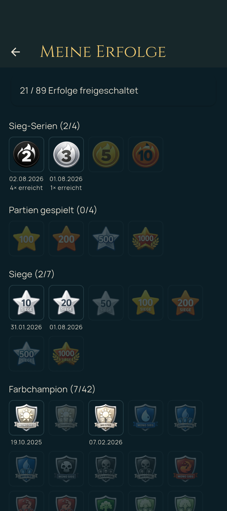
11. Players and Groups
This section is only available when the “Track players” switch (Home tab → More options) is enabled.
- “Manage groups” (shortcut on the Home tab) lets you create playgroups – regular play circles that games can be assigned to, for example to filter the statistics by group. Within a group, “Add member” lets you add more players (archived players can optionally be shown as well).
- Each player has their own player detail view with their decks, reachable e.g. via the group detail view. From there, a player profile can also be shared via QR code or renamed.
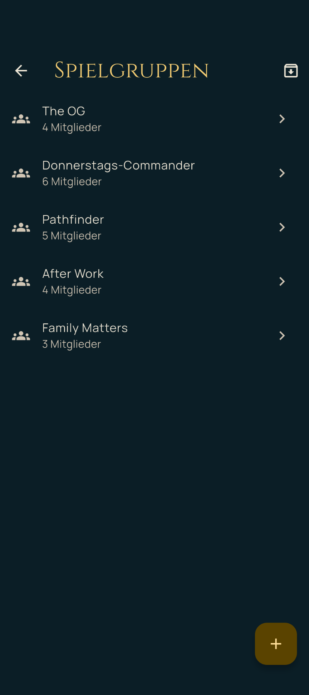
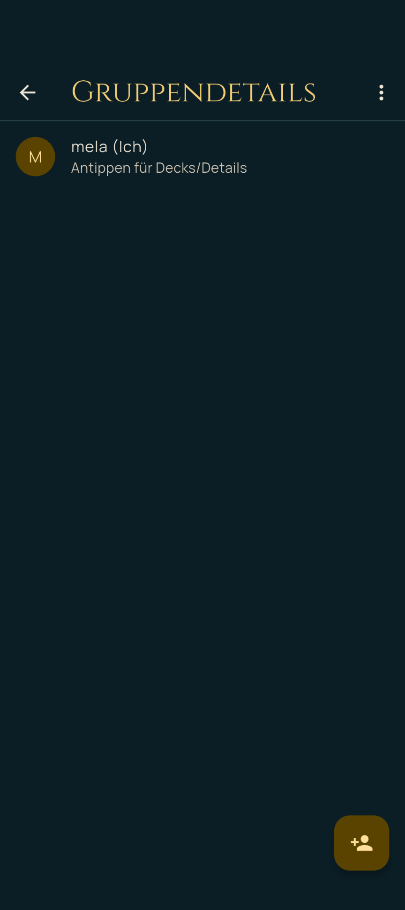
12. Add-on Modules: Wheel of Chaos, Archenemy Schemes, Planechase
Three optional add-on modules can be enabled independently of each other on the Home tab under “More options”. When a module is active, a matching setup entry appears in the shortcuts, and the corresponding controls appear in the live view:
- Wheel of Chaos: a wheel of fortune with bonus challenges for each color identity that can be spun during the live game using the “Spin wheel” button. The challenges for each color can be edited under “Manage Wheel of Chaos”.
- Archenemy schemes: draws scheme cards during the live game in Archenemy mode (ongoing or resolved once). Under “Set up Archenemy schemes” you can choose which sets to draw from (all available sets or a selection of specific sets).
- Planechase: draws plane/phenomenon cards, optionally enabled for the entire game (Commander mode only). Under “Set up Planechase” you can also choose the set selection; if the locally stored cards are not enough for the number of participants, a corresponding notice appears during game setup.
Wheel of Chaos in detail:
Setup: Under “Manage Wheel of Chaos”, you define how the five colors are distributed on the wheel (e.g. each color twice) and which challenge is assigned to each color. If a color appears several times on the wheel, it always triggers the same challenge. The wheel has five stages, each of which can be edited on its own tab; stage 1 applies at the start of every game. The challenges are just display text that you carry out yourselves at the table. The idea for the Wheel of Chaos comes from “herumkommandiert” (Twitch and YouTube).
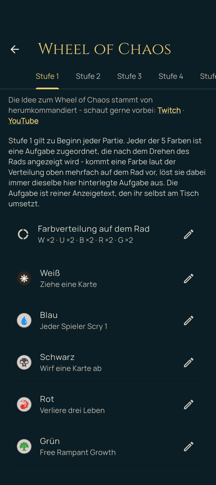
In the game: “Spin wheel” in the live view opens the wheel of fortune at the current stage. After spinning, the color landed on is shown with its challenge, which you confirm with “Next”; “Spin again” spins the wheel once more. The stage increases automatically once the wheel has been spun as many times as there are players in the game – i.e. as soon as, in theory, everyone has spun once. Since the app cannot tell who is spinning, it only counts the number of spins for this.
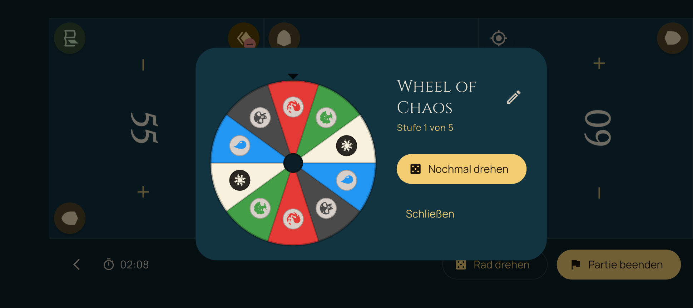
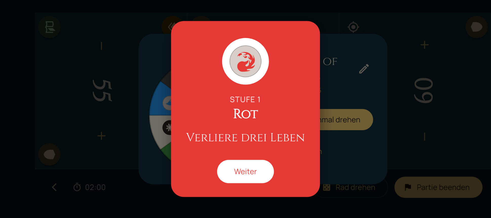
Archenemy schemes in detail:
Setup: Under “Set up Archenemy schemes”, choose “All sets” or “Specific sets” and tick the sets you want. “Sync now” downloads the scheme cards of the selected sets from Scryfall and stores them locally – after that, drawing during live tracking also works without an internet connection.
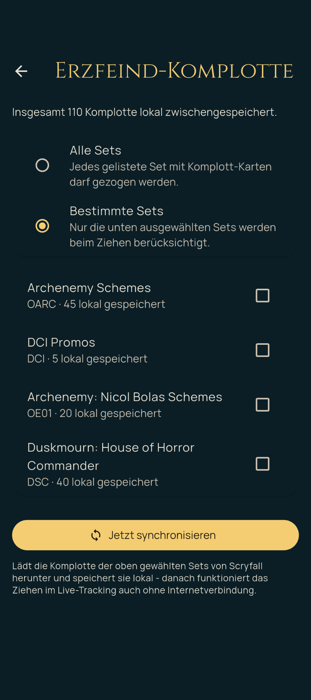
Drawing a scheme: In the live view, the archenemy’s tile has an additional green scheme icon in the corner. Tapping it draws a scheme card from the selected sets.
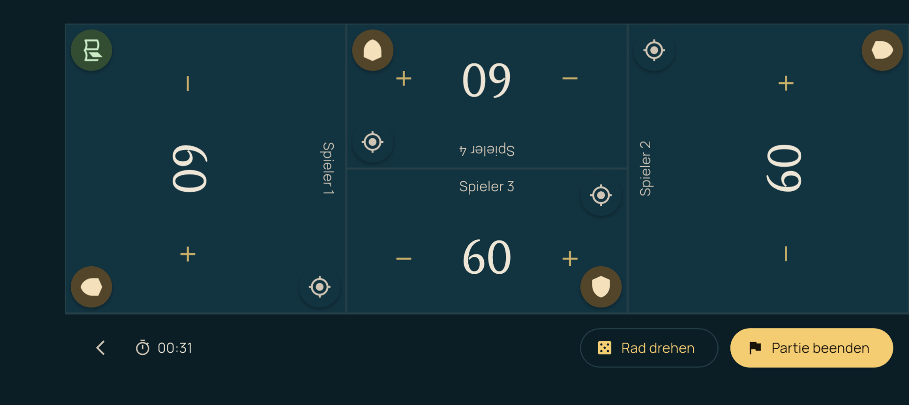
Display: The drawn card is shown large and facing the archenemy’s side of the table, together with its name and card type (e.g. “Ongoing Scheme”). “Resolved” completes the scheme and closes the card. Ongoing schemes can instead be kept in play with “Keep open”.
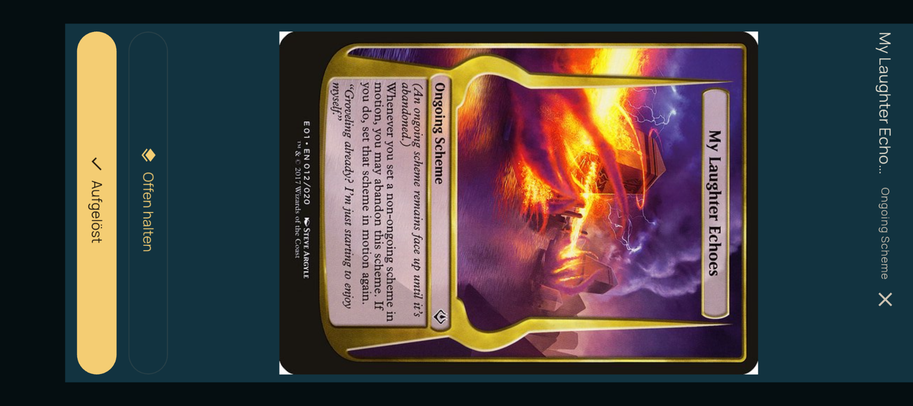
Ongoing schemes: Schemes kept open appear as an additional icon on the archenemy’s tile; a number on the icon shows how many are currently open. Tapping it opens the “Open ongoing schemes” list with all currently active schemes.
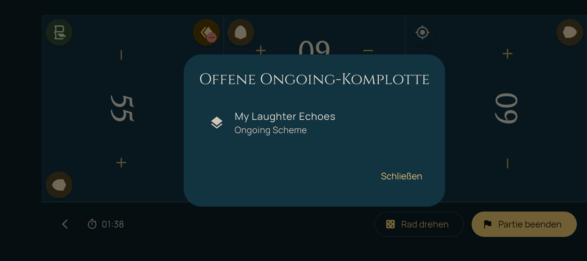
Planechase in detail:
Setup: Under “Set up Planechase”, choose “All sets” or “Specific sets” and tick the sets you want. “Sync now” downloads the plane and phenomenon cards of the selected sets from Scryfall and stores them locally.
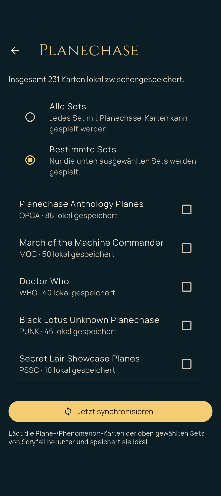
In the game: Planechase is enabled when creating a game with the switch “Use plane/phenomenon cards for this game” (see chapter 5). In the live view, the current card then lies in the middle of the table; “Change plane” reveals the next card.
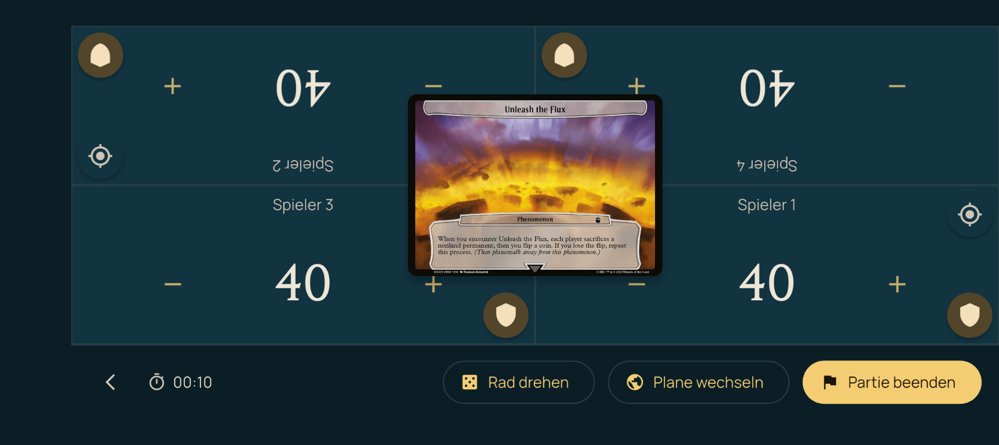
13. Exporting, Importing and Backing Up Data
- Export data (shortcut on the Home tab): choose which categories to export (players, decks, groups, games). This creates a JSON file, which you can then either pass on via “Share as file” using the system share menu (e.g. via messenger, email or cloud storage) or store in any folder on the device via “Save to folder”.
- Import data (shortcut on the Home tab): offers three ways – “Choose file” for a previously exported JSON file, “Scan QR code” for a shared QR code and “Restore from backup” for the automatic backup. While importing, the app asks about possible duplicates (e.g. “Same person?” for a player name it already knows, or whether an existing deck should be updated).
- Share a single deck, player profile or game via QR code: quicker than the full export wizard, directly via the QR icon in the deck list, the player detail view or the game detail view. “Scan QR code” in the import section lets you read in a deck, player profile or game shared this way.
- Automatic backup (Home tab → More options, enabled by default): writes a backup file to an app-specific folder on the device when the app is closed – strictly local, without a cloud account or any transfer. You restore it via “Import data” → “Restore from backup”. In addition, “Back up now” lets you create an additional backup copy immediately at any time, e.g. before switching devices.
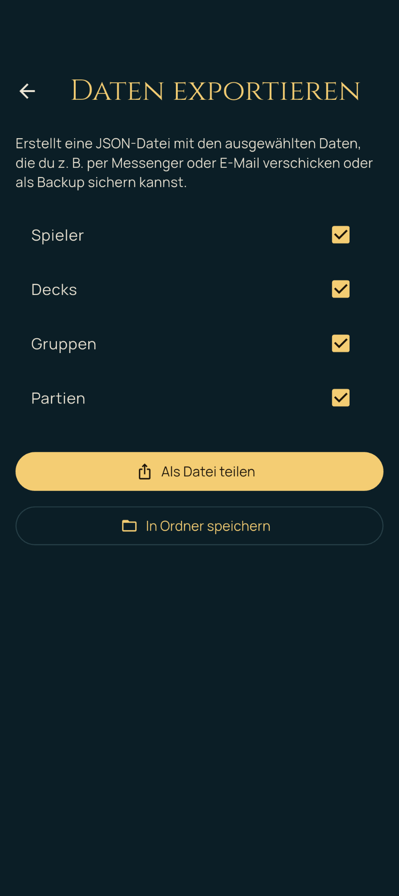
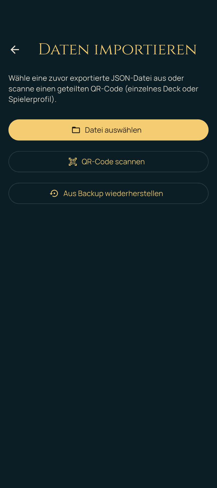
14. FAQ
I didn’t track life totals live during the game – can I still
record the result?
Yes, via “Add manually” when creating a new game (see
chapter 5). You can enter the result, placements and mulligans
afterwards; only the minute-by-minute life history is missing.
How do I change my own player name or see my decks?
Via the player detail view of your own profile, reachable from the
Decks tab (you can also rename yourself there at the top right).
Does the random deck favor decks I haven’t played in a while?
No. All of your own decks that match the selected filters have exactly
the same chance of being drawn – regardless of last game, win rate
or rating (see chapter 3).
Why does the score on the Home tab show a different value than in the statistics?
The Home tab always uses all completed games, the statistics only
those that match the selected filters (group, game mode, time span). The
calculation is the same (see chapter 9).
I only play for myself – do I need groups/players?
No – if “Track players” is disabled (the default when choosing “Just
me” during initial setup), all related parts of the interface
disappear completely, without losing any features that relate to
your own games.
Where is my data stored?
Exclusively locally on your own device. For transferring it to a
new device or as an additional backup, see chapter 13
(export/backup).
This manual is continuously updated as new features are added. Feedback and questions are always welcome – just pass them on to the developer.